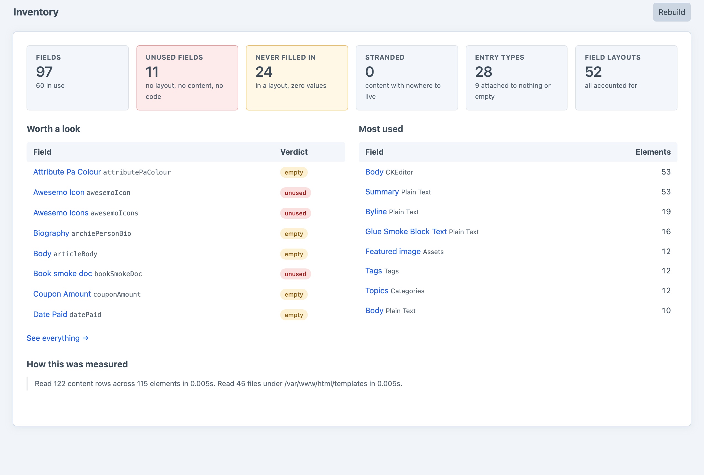
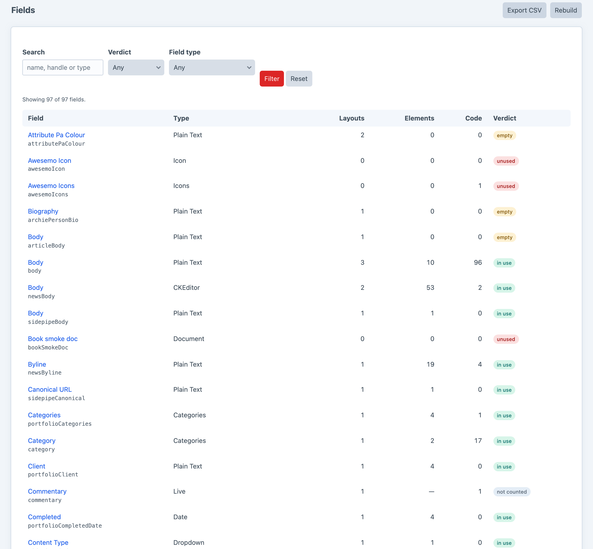
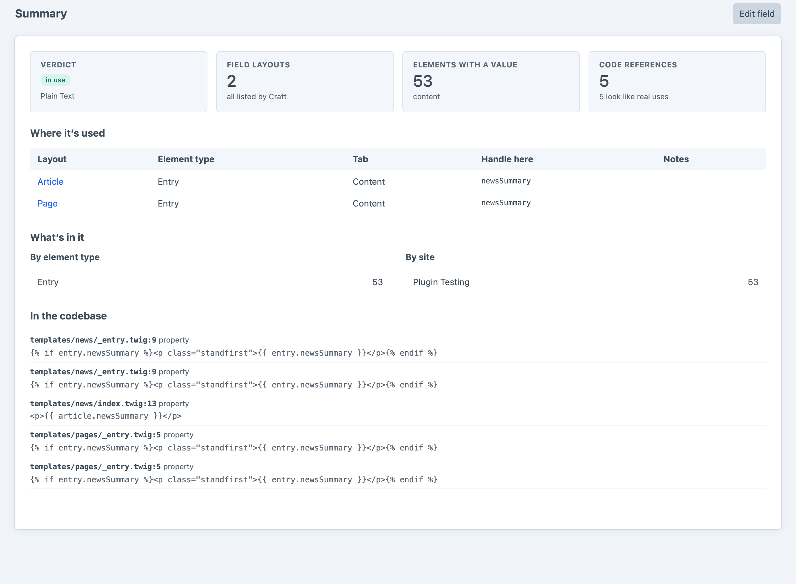

She knows where everything is.
A complete inventory of your content model — every field, entry type and layout, what actually uses it, and what nothing does.
Every field gets a verdict, not a number — because a zero you can’t explain is what gets the wrong field deleted.
The difference between a field nobody fills in and a field nothing can reach is the difference between a form to fix and a row to delete.
Craft 5 keeps field values in three places. Count one and miss the others and the report is worse than useless.
A field can be in no layout and hold no content and still be referenced — by a template that populates it on save, by a module, by a migration.
No tables, no writes, no migration to undo. Every screen is a question asked of what is already there.
How much content model you have, and how much of it nothing is using.

Layouts, elements holding a value, lines of code naming it — and what that adds up to.

Where it’s used, what’s in it, and every line of your code that names it.
